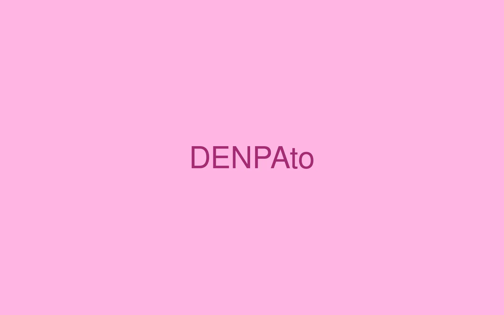

DENPAto（でんぱと）

PROJECT INFORMATION
リリースを見る ↗（新しいタブで開く）オプテージの新規事業創出プログラム「DENPAto」。企画・設計、デザイン、フロントエンドを担当しています。
01 / 背景とテーマ
輪郭を与える
オプテージが2023年10月に立ち上げた、モバイル通信を活用した新規事業創出プログラムです。名前のDENPAtoには、「電波と」つくる未来、電波が向かう未来をともに描く、という意味を込めています。通信はそれ自体では目に見えず、とても語りにくい。だからプログラムの名前を、通信と「何か」が必ず並ぶ形にしました。
02 / SCHEMAの担当範囲
全体を整える
SCHEMAは設計・企画からデザイン、フロントエンドまでを担当。応募してくるのはスタートアップ、学生、中小企業、大学と、前提のまったく違う人たちです。誰が読んでも「自分が呼ばれている」と感じられるかどうかを基準に、ことばとビジュアルを組み立てました。実証用SIMの無償提供やメンタリングといった支援の中身も、同じ語り口で並べています。
03 / 取り組みの視点
枠組みをひらく
「IoX（Internet of 何か）」という掲げ方に、このプログラムの性格が表れています。用途を先に決めず、持ち込まれる「何か」の側を空けておく。SHIBUYA QWSやマイラボ渋谷での展示へとつながる、共創の入口をひらいた取り組みです。